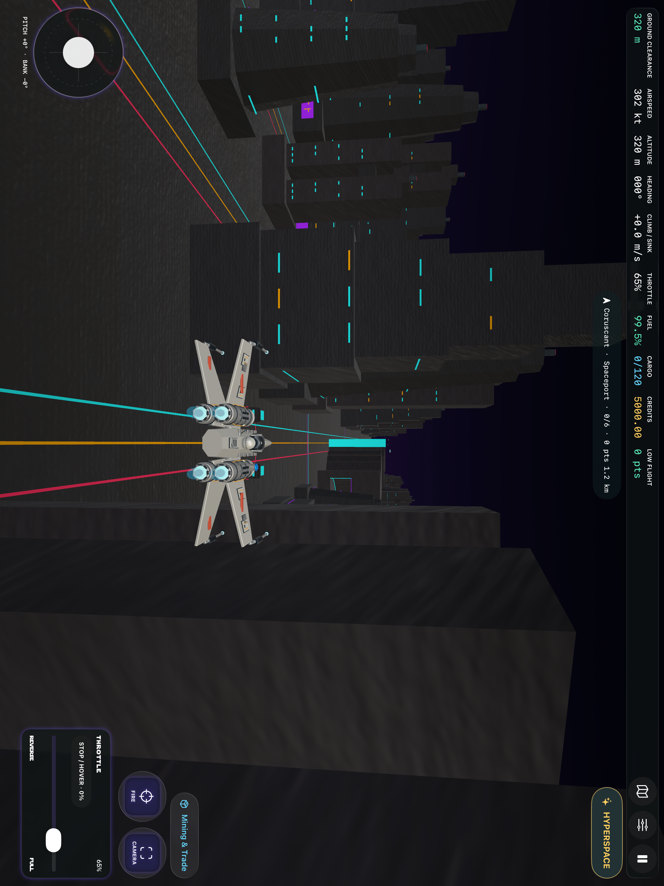
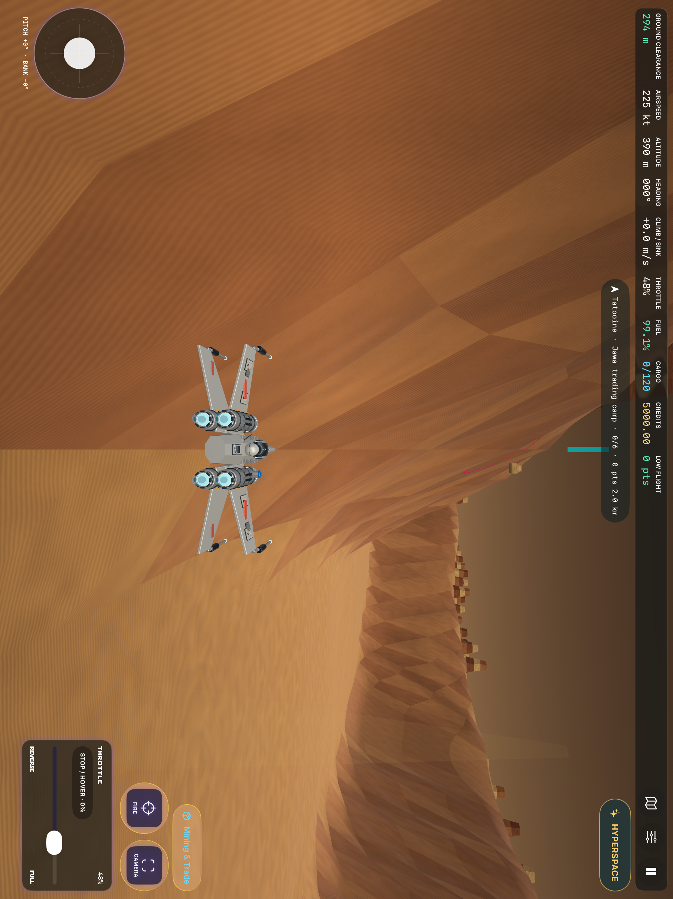
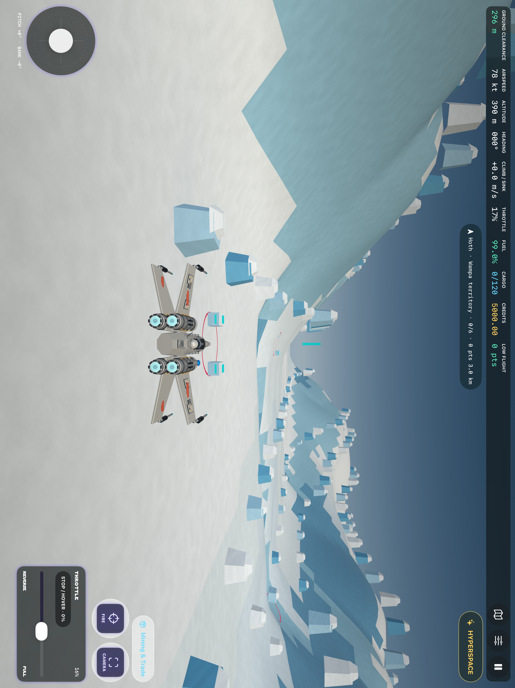
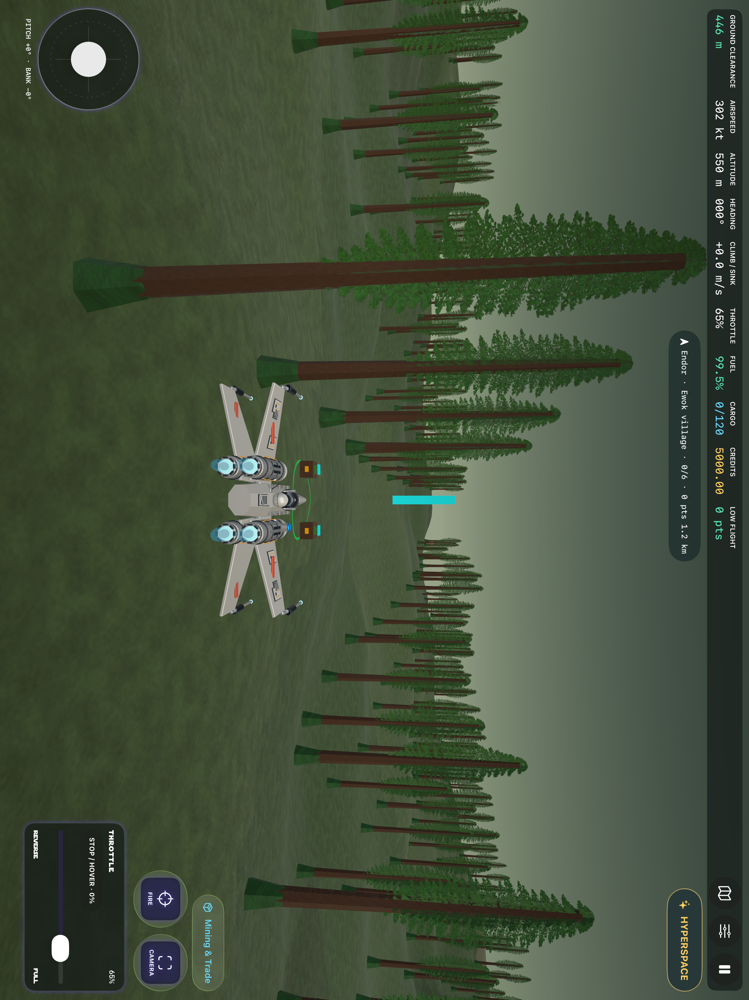
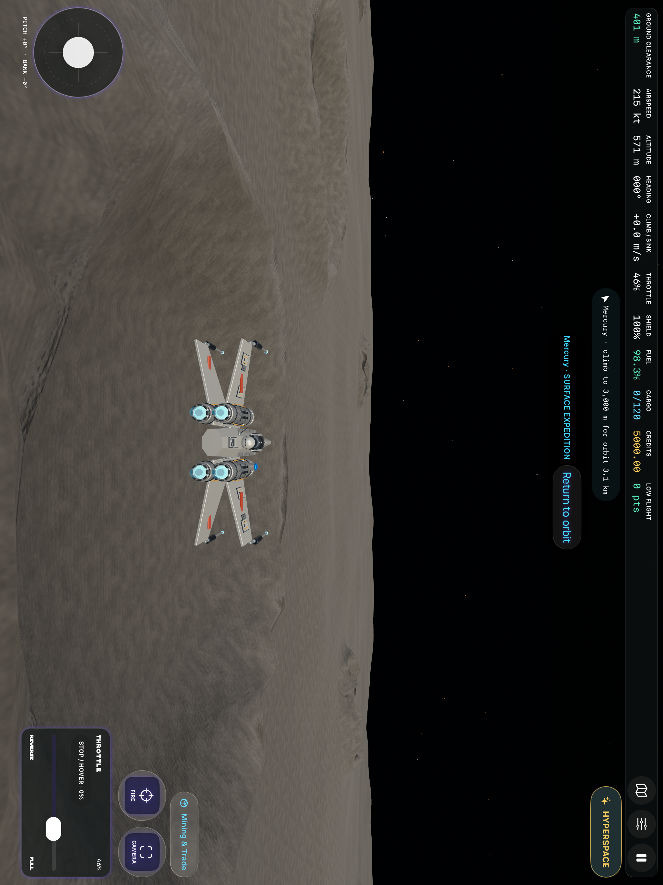
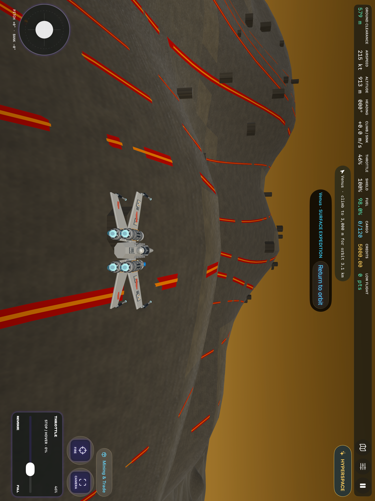
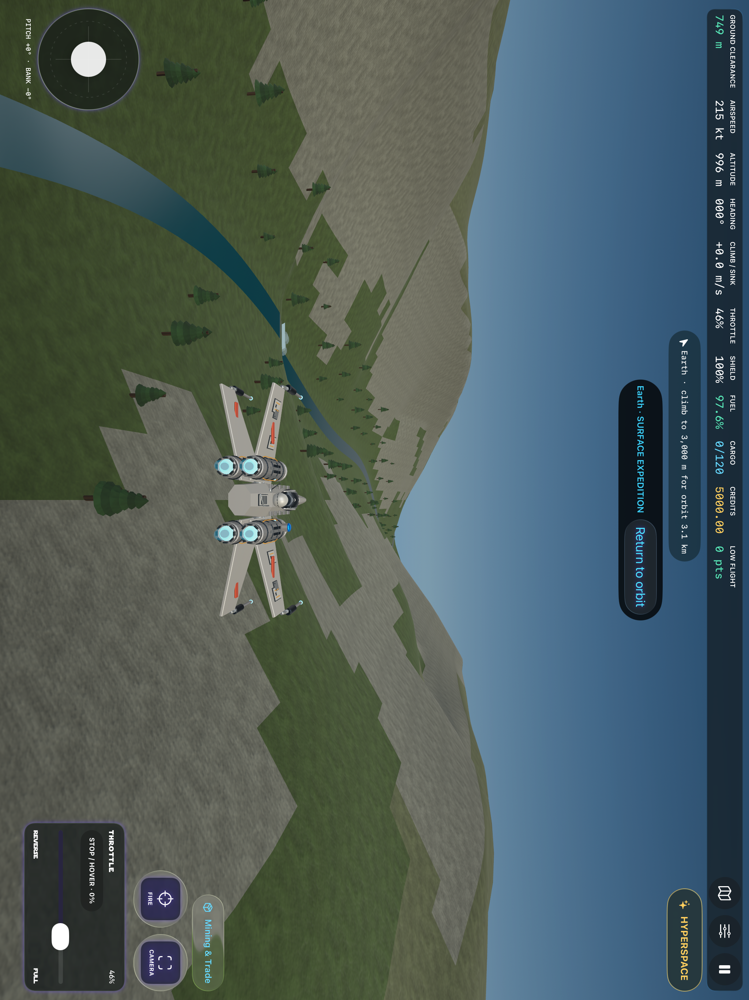
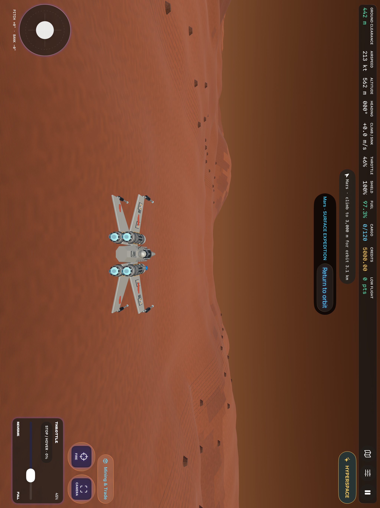
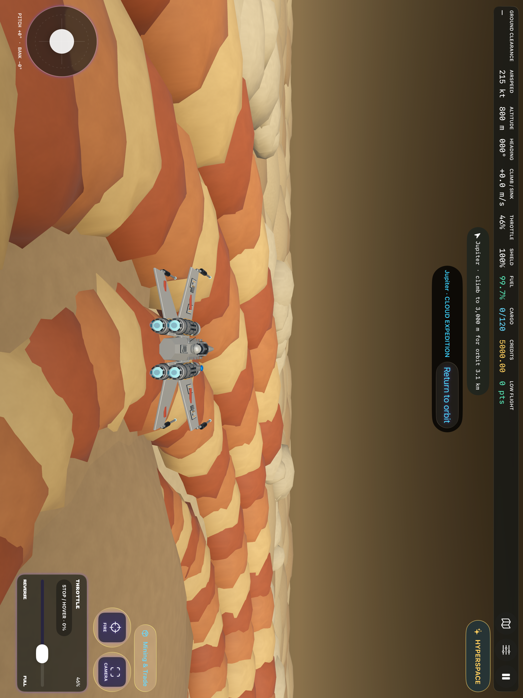

STARFLIGHT · SCENERY UPDATE · 13 NOVEMBER 2026
Nine worlds to fly through
Actual screenshots and gameplay captured in the iPad simulator. All scenes are native in-game scenery.
Gameplay tour
Coruscant → Tatooine → Hoth → Endor → Mercury → Venus → Earth → Mars → Jupiter.
Coruscant
Neon skyline, dark towers and rain.

Tatooine
A winding sandstone canyon beneath twin suns.

Hoth
Glacier valley, blue crevasses and snow.

Endor
Tall forest corridor, irregular crowns and soft dawn mist.

Mercury
Airless craters and exposed rock.

Venus
Dark basalt, a caldera and luminous volcanic fissures.

Earth
A forested river valley with waterfalls and coastal water.

Mars
Rust-coloured basins, sediment seams and eroded mesas.

Jupiter
Layered cloud banks and a slowly rotating cyclone.

Saturn, Uranus, Neptune and the Moon keep their previous scenery. These are original stylised regions inspired by visual themes in the Portals gallery, with Starflight’s normal flight controls and collisions. The recordings are silent simulator captures; physical-device frame rate has not been measured.